1 Logowanie
Otwórz https://localhost:8443/auth/login w przeglądarce.
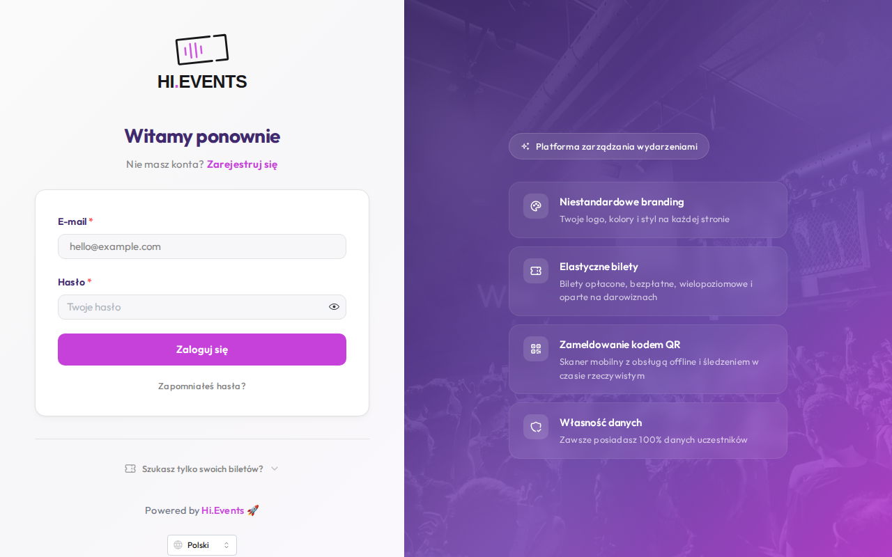
| Pole | Wartość |
|---|---|
| Adres e-mail | admin@example.com |
| Hasło | Password123! |
Po zalogowaniu trafisz na Panel organizatora.
2 Panel organizatora
Główny pulpit pokazuje statystyki sprzedaży i listę nadchodzących wydarzeń.
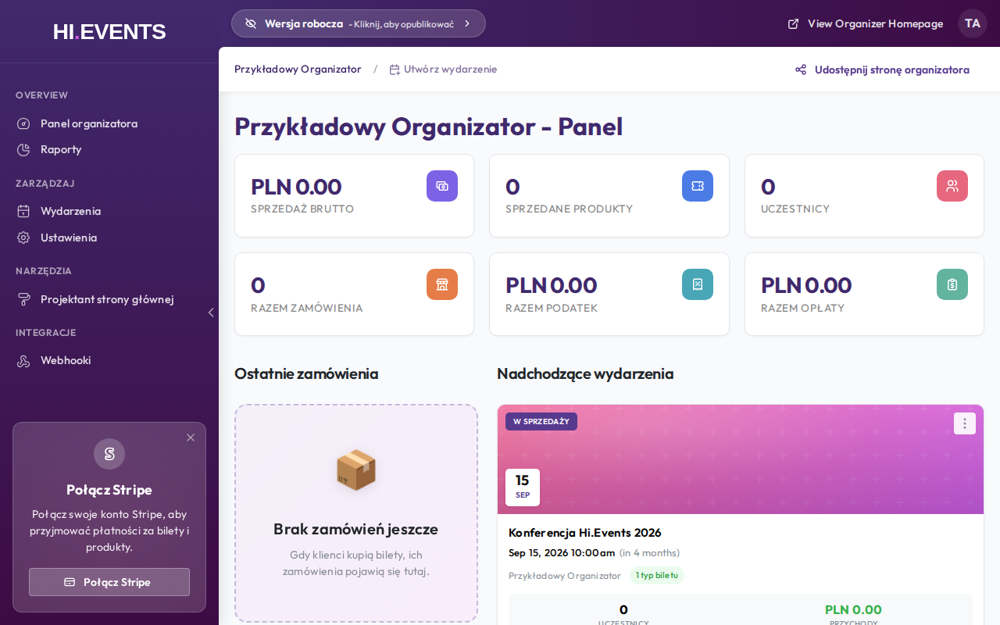
| Sekcja menu | Elementy |
|---|---|
| PRZEGLĄD | Panel organizatora, Raporty |
| ZARZĄDZAJ | Wydarzenia, Ustawienia |
| NARZĘDZIA | Projektant strony głównej |
| INTEGRACJE | Webhooki |
Kliknij w nazwę wydarzenia, aby otworzyć panel jego zarządzania.
3 Tworzenie wydarzenia
Na panelu organizatora kliknij przycisk + Utwórz wydarzenie.
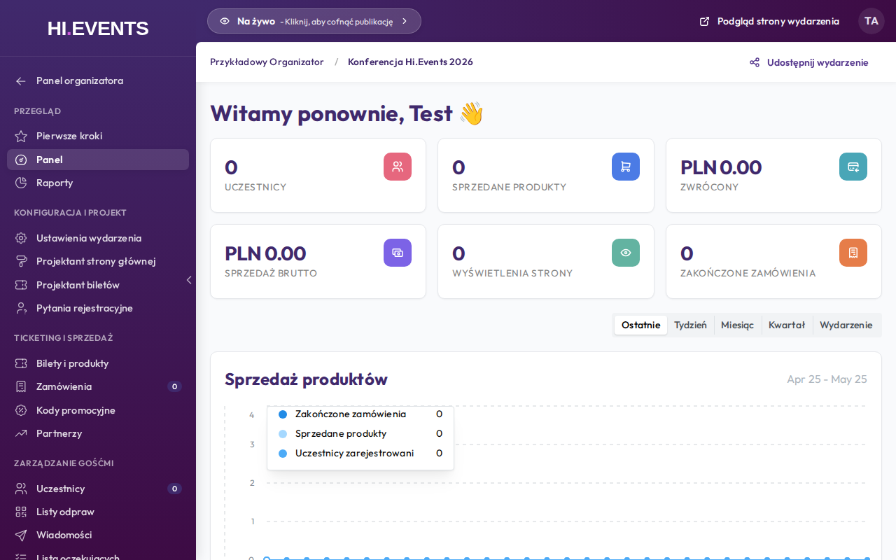
| Pole | Opis |
|---|---|
| Nazwa wydarzenia | Wymagane, maks. 150 znaków |
| Kategoria wydarzenia | Np. Technologia, Muzyka, Biznes… |
| Opis wydarzenia | Edytor rich-text, maks. 2 000 znaków |
| Data i godzina rozpoczęcia | Wymagane |
| Data i godzina zakończenia | Opcjonalne |
Cykl życia wydarzenia
Nowe wydarzenie startuje jako wersja robocza (niewidoczne publicznie). Aby opublikować, kliknij pasek statusu „Wersja robocza – Kliknij, aby opublikować" na górze strony.
4 Pierwsze kroki
Po wejściu w nowe wydarzenie zobaczysz stronę z listą kroków niezbędnych przed publikacją.
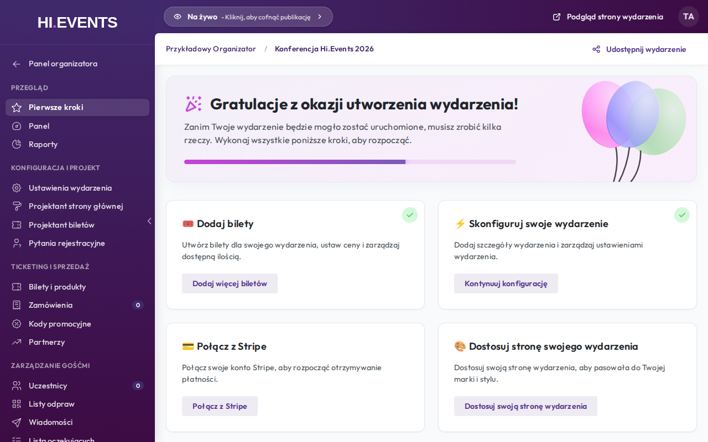
- Dodaj bilety – utwórz bilety w sekcji Bilety i produkty
- Skonfiguruj swoje wydarzenie – uzupełnij szczegóły w Ustawieniach wydarzenia
- Połącz z Stripe – podłącz konto do przyjmowania płatności kartą
- Dostosuj stronę swojego wydarzenia – skonfiguruj wygląd w Projektancie strony głównej
5 Bilety i produkty
Ścieżka: menu boczne → Bilety i produkty

Tworzenie nowego biletu
- Kliknij zielony przycisk + Utwórz (prawy górny róg)
- Wybierz z menu Bilet lub produkt
- Wypełnij formularz i kliknij Zapisz
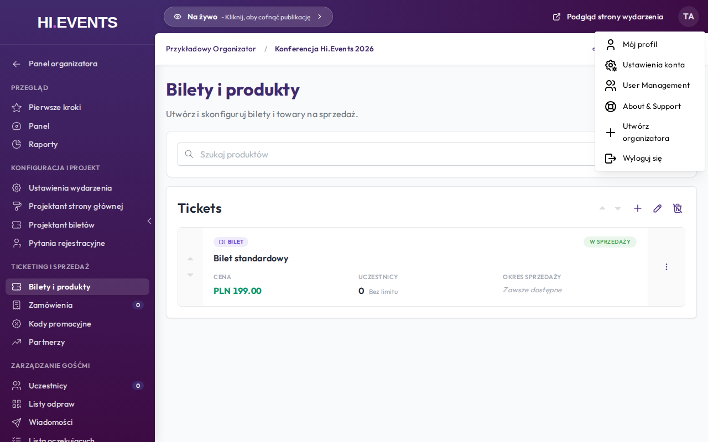
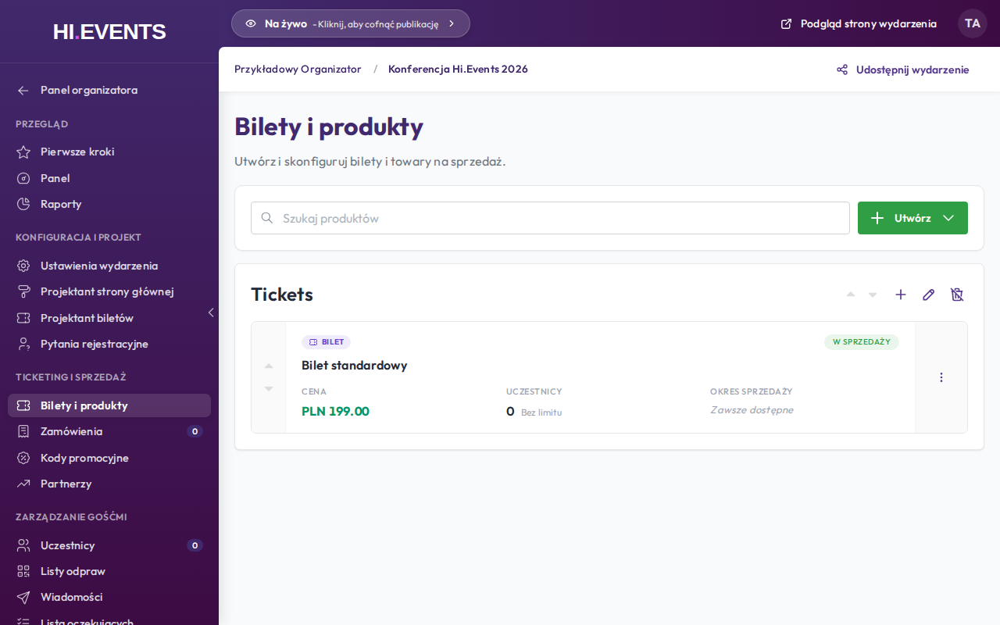
| Pole | Opis |
|---|---|
| Typ produktu | Bilet – z kodem QR przy zakupie | Ogólny – produkt bez biletu (np. koszulka) |
| Typ ceny | Płatny / Bezpłatny / Donacja (klient wpisuje kwotę) |
| Nazwa | Nazwa biletu, np. „Bilet VIP", „Early Bird" |
| Opis | Opis widoczny na stronie publicznej (rich-text) |
| Kategoria produktu | Grupowanie biletów na stronie publicznej |
| Cena | Cena w walucie wydarzenia |
| Dostępna ilość | Limit sztuk (puste = bez limitu) |
Opcje zaawansowane
Kliknij belkę „Podatki, Opłaty, Widoczność, Okres sprzedaży…", aby rozwinąć dodatkowe ustawienia:

| Opcja | Opis |
|---|---|
| Podatki i opłaty | Przypisz zdefiniowane podatki VAT i opłaty serwisowe |
| Okres sprzedaży | Data startu i końca sprzedaży biletu |
| Min / Maks na zamówienie | Limity sztuk w jednym zamówieniu |
| Ukryj przed datą startu | Bilet niewidoczny przed otwarciem sprzedaży |
| Ukryj po wyprzedaniu | Bilet znika gdy wyczerpany |
| Ukryj bez kodu promocyjnego | Bilet widoczny tylko po wpisaniu kodu |
| Pokaż pozostałą ilość | Wyświetla licznik na stronie publicznej |
| Lista oczekujących | Włącz zapis na listę gdy wyprzedany |
6 Kody promocyjne
Ścieżka: menu boczne → Kody promocyjne
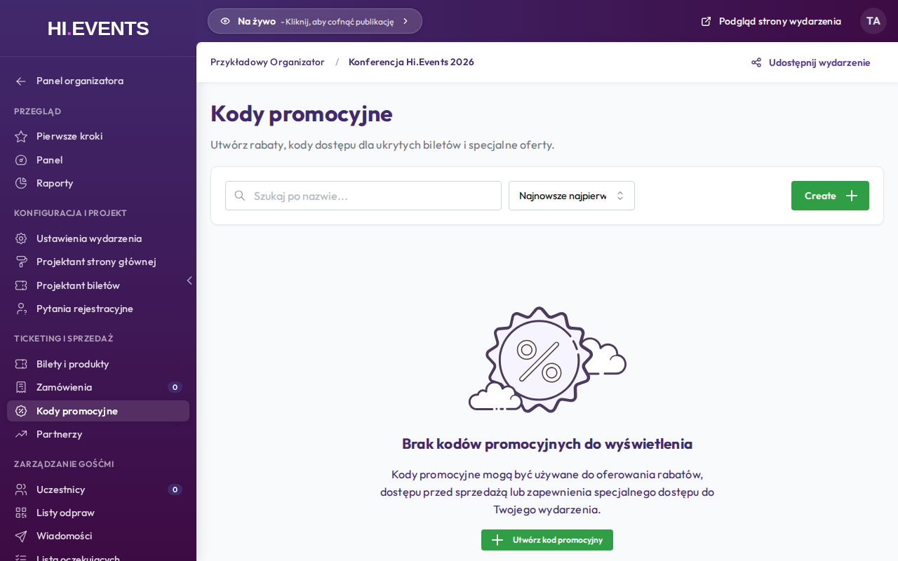
Kliknij + Utwórz kod promocyjny, aby dodać nowy kod.
| Pole | Opis |
|---|---|
| Kod | Wpisz własny (np. PROMO20) lub kliknij „Generuj" |
| Typ zniżki | Brak / Procentowy / Kwotowy |
| Wartość | Procent lub kwota w walucie wydarzenia |
| Produkty | Które bilety obejmuje kod (domyślnie: wszystkie) |
| Data ważności | Opcjonalna data wygaśnięcia kodu |
| Limit użyć | Maks. liczba użyć (puste = bez limitu) |
7 Uczestnicy
Ścieżka: menu boczne → Uczestnicy
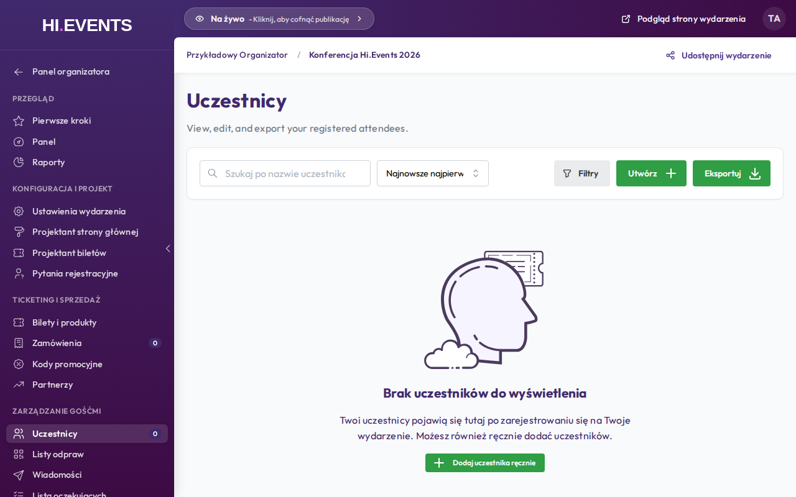
| Funkcja | Opis |
|---|---|
| Wyszukiwanie | Po imieniu, nazwisku, e-mailu lub numerze zamówienia |
| Filtry | Typ biletu, status: Aktywny / Anulowany / Oczekuje na płatność |
| Eksport | Przycisk Eksportuj – pobiera plik XLSX |
| Ręczne dodanie | Przycisk + Utwórz – dodaj uczestnika z własną kwotą |
8 Zamówienia
Ścieżka: menu boczne → Zamówienia
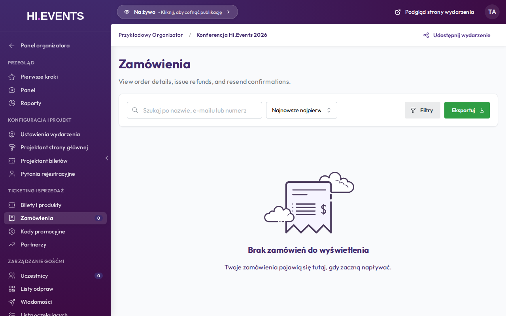
Kliknij w zamówienie, aby otworzyć panel boczny z zakładkami:
| Zakładka | Zawartość |
|---|---|
| Podgląd | Numer ref., kwoty, odpowiedzi na pytania, lista uczestników |
| Edytuj | Dane zamawiającego, notatki wewnętrzne |
| Zwrot | Zwrot pełny lub częściowy + opcja anulowania zamówienia |
9 Wiadomości
Ścieżka: menu boczne → Wiadomości
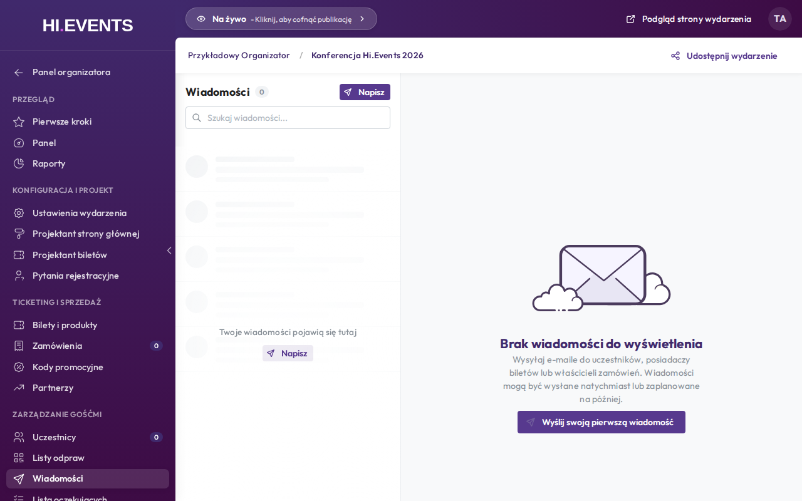
Kliknij Utwórz, aby napisać wiadomość do uczestników.
| Pole | Opis |
|---|---|
| Odbiorcy | Wszyscy uczestnicy / z konkretnym biletem / właściciele zamówień |
| Temat | Temat wiadomości e-mail |
| Treść | Edytor rich-text |
| Kiedy wysłać | Natychmiast lub zaplanowany termin (1 tydzień / 1 dzień / 1 godz. przed/po) |
10 Ustawienia wydarzenia
Ścieżka: menu boczne → Ustawienia wydarzenia
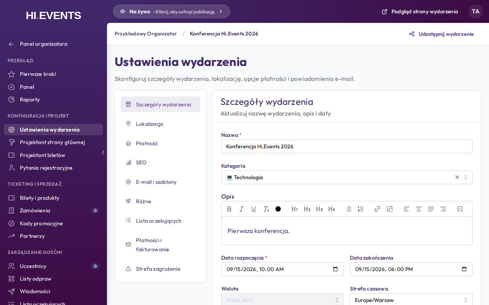
| Zakładka | Zawartość |
|---|---|
| Szczegóły wydarzenia | Nazwa, kategoria, opis, daty, waluta, strefa czasowa |
| Lokalizacja | Adres fizyczny lub oznaczenie jako online |
| Płatność | Metody płatności (Stripe, offline), ustawienia rozliczeniowe |
| SEO | Meta title, meta description, Open Graph (Facebook/Twitter) |
| E-mail i szablony | Nadawca e-maili, szablony potwierdzeń i biletów |
| Różne | Komunikat przed/po zakupie, czas sesji checkout |
| Lista oczekujących | Auto-przetwarzanie listy, czas na zakup oferty |
| Płatności i fakturowanie | Konfiguracja faktur PDF (prefix, numer startowy, dane firmy) |
| Strefa zagrożeń | Usunięcie lub archiwizacja wydarzenia (tylko Admin) |
11 Ustawienia konta
Ścieżka: https://localhost:8443/manage/account/
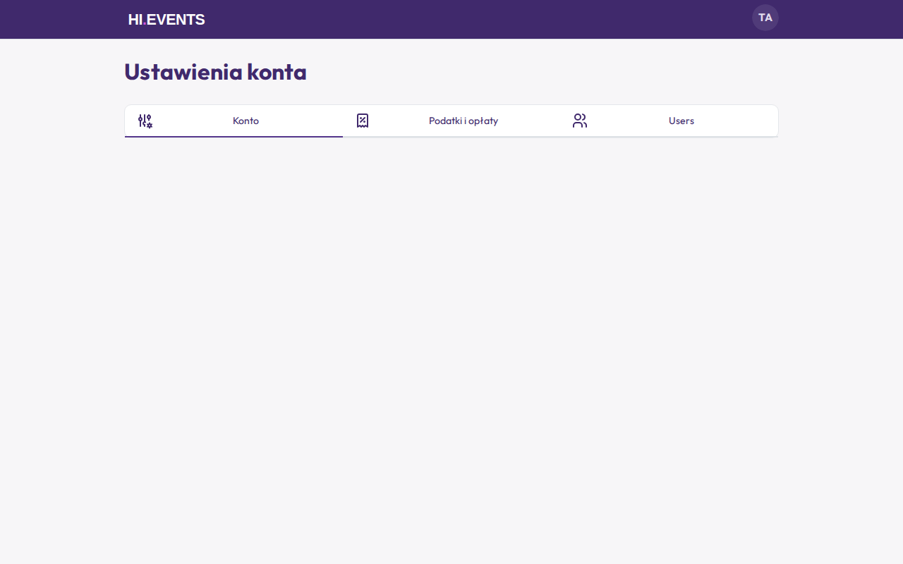
| Sekcja | Opis |
|---|---|
| Ustawienia konta | Nazwa konta, logo, branding organizacji |
| Podatki i opłaty | Globalne stawki podatkowe przypisywane do biletów |
| Domyślne ustawienia wydarzeń | Domyślna waluta i strefa czasowa dla nowych wydarzeń |
| Użytkownicy | Zapraszanie i zarządzanie użytkownikami (role: Administrator / Organizator) |
| Płatności | Podpięcie konta Stripe Connect |
12 Listy odpraw (check-in)
Ścieżka: menu boczne → Listy odpraw
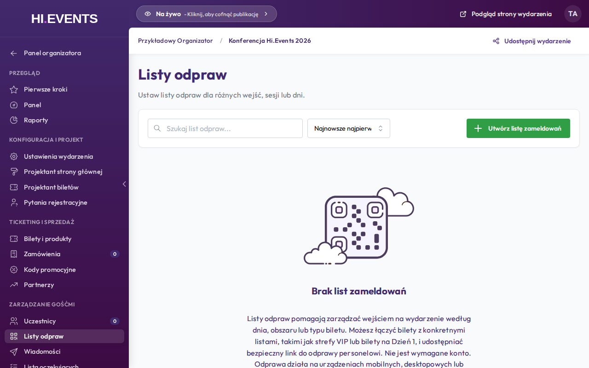
Kliknij + Utwórz listę odpraw, aby dodać nowy punkt kontrolny.
| Pole | Opis |
|---|---|
| Nazwa | Np. „Wejście główne", „Strefa VIP" |
| Bilety | Które typy biletów obsługuje ten punkt |
| Data aktywacji / wygaśnięcia | Okno czasowe w którym można skanować |
Po zapisaniu system generuje link i kod QR — udostępnij go obsłudze wejścia. Link /check-in/{id} nie wymaga logowania do systemu.
| Wynik skanowania | Znaczenie |
|---|---|
| ✅ Ważny | Wejście dozwolone |
| ❌ Już zeskanowany | Bilet był już użyty – próba ponownego wejścia |
| ❌ Nieważny | Zły bilet lub nieodpowiedni typ dla tej listy |
13 Partnerzy (afiliacje)
Ścieżka: menu boczne → Partnerzy
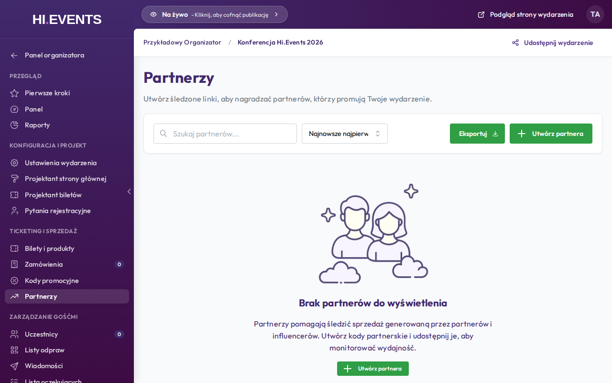
Kliknij + Utwórz, aby dodać partnera afiliacyjnego.
| Pole | Opis |
|---|---|
| Nazwa | Nazwa partnera lub influencera |
| Kod | Unikalny kod 3–20 znaków lub kliknij „Generuj" |
| Opcjonalnie – do kontaktu z partnerem |
System generuje unikalny link do strony Twojego wydarzenia z kodem afiliata. Wszystkie zakupy przez ten link są śledzone i widoczne w raportach.
14 Płatności offline i fakturowanie
Ścieżka: menu boczne → Ustawienia wydarzenia → Płatności i fakturowanie
14.1 Włączanie płatności offline
Płatności offline umożliwiają akceptowanie przelewów bankowych, czeków lub innych metod płatności poza systemem. Uczestnik może złożyć zamówienie i otrzymać bilety – zamówienie będzie oznaczone jako Awaiting Payment (oczekuje na zapłatę) aż do ręcznego potwierdzenia.
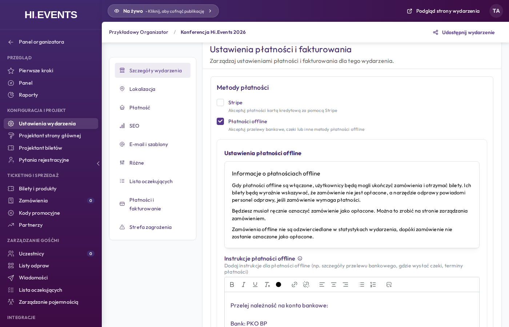
- Przejdź do Ustawienia wydarzenia → Płatności i fakturowanie
- W sekcji Metody płatności zaznacz checkbox Płatności offline
- Możesz odznaczyć Stripe, jeśli chcesz przyjmować wyłącznie płatności offline, lub pozostawić oba aktywne, aby dać kupującemu wybór
14.2 Instrukcja płatności offline
Po włączeniu płatności offline wpisz instrukcje dla kupującego – będą wyświetlane na stronie potwierdzenia zamówienia oraz w e-mailu.
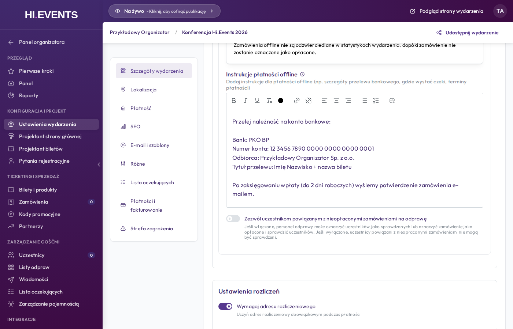
Przykładowa treść instrukcji:
Bank: PKO BP Numer konta: 12 3456 7890 0000 0000 0000 0001 Odbiorca: Przykładowy Organizator Sp. z o.o. Tytuł przelewu: Imię Nazwisko + nazwa biletu Po zaksięgowaniu wpłaty (do 2 dni roboczych) wyślemy potwierdzenie zamówienia e-mailem.
Opcjonalnie zaznacz Zezwól uczestnikom oczekującym na płatność offline na odprawę – obsługa przy wejściu zobaczy ostrzeżenie, ale będzie mogła wpuścić uczestnika mimo braku potwierdzenia płatności.
Kliknij Zapisz, aby zastosować zmiany.
14.3 Ręczne potwierdzenie płatności
Po otrzymaniu przelewu oznacz zamówienie jako opłacone:
- Przejdź do menu boczne → Zamówienia
- Kliknij w zamówienie ze statusem Awaiting Payment
- W bocznym panelu wybierz zakładkę Edit
- Zmień status na Paid i zapisz
14.4 Włączanie fakturowania
W tej samej sekcji przewiń do Ustawienia faktury:
| Pole | Opis |
|---|---|
| Włącz fakturowanie | Przełącznik – faktury będą generowane dla zamówionych biletów i dołączane do e-maili z potwierdzeniem |
| Etykieta dokumentu | Domyślnie „Faktura VAT" – nagłówek faktury |
| Prefiks numeru | Np. FV-2026 – prefix przed numerem (tylko litery, cyfry i myślniki) |
| Pierwszy numer faktury | Numer startowy – nie można zmienić po wystawieniu pierwszej faktury |
| Okres płatności | Liczba dni na zapłatę widoczna w warunkach na fakturze |
| Nazwa organizacji | Wymagane – pełna nazwa firmy na fakturze |
| Adres organizacji | Wymagane – adres firmy |
| Dane podatkowe | NIP, REGON – wyświetlane w stopce faktury |
| Uwagi na fakturze | Opcjonalne informacje dodatkowe (np. numer konta bankowego) |
Kliknij Zapisz, aby zapisać konfigurację fakturowania.